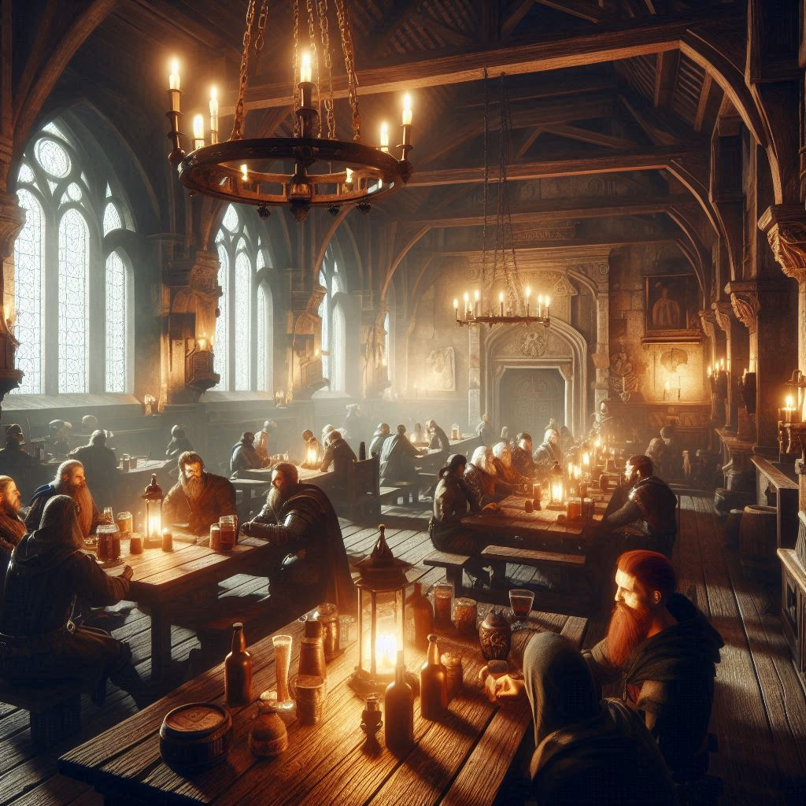

Library
This is a repository of information in the form of
links to writings on agorism and voluntaryism.
Here are links to essays and information on
agorism, voluntaryism, and stateless society.
Inner Realm Bazaar

This is a market space for those who have proven
themselves well-boundaried and knowledgeable of
the NAP.
The bazaar is the local manifestation of the
marketplace that exists in some form or another in
all locations of the network. Only those who have
passed through admissions may buy or sell in this
marketplace. The Bounty Board is the online
version of this. The non-aggression principle,
self-defense principle, and the right of
restitution for damages done except when done in
self-defense.
Outer Realm Bazaar

A marketplace to vend goods and services.
This is a space for transactions with individuals
still attempting to prove themselves to be
well-boundaried as described in the previous
section.
Campfire Cafe

A cozy, welcoming place for initial introductions
and less formal chats.
Tavern Hall

This is an outdoor hall intended for community
discussions, trade of information, and networking.
We value conversation over other diversions and
this is the place to discuss.
The Crossroads

Where people can see paths others have taken or
connect with groups/individuals who share similar
interests.
The Trailhead

A place where people can sign up for groups or
begin a collaborative project.
Admissions Portal

Here you
can apply for admission to the inner realm.
Directionality
will be discussed in the next chapter, but
essentially it is a philosophical model like
pragmatism that is based on creating positive
conclusions and a positive course of action based on
an assessment of the current information available.
The method of conclusion, as well as the conclusion
itself, can be updated as new information is
synthesized. This allows for contracts and
pluralistic norms that grow and evolve as time goes
on and new information becomes available.
Love, Peace & Militia
A call for the disarmament of the government -and a call to arms for the militia which is the people
When should you shoot someone? How does the threat of equalizing force (death) affect how you treat others? When you know your intended victim is likely to respond with immediate lethal force if necessary to defend themselves, you’re not going to choose them as your victim over someone who relies on others to meet their need for safety or protection. If you rely on others to defend you, that isn’t wrong, but you should take your personal responsibility to defend yourself seriously.
Don’t be forced to subsidize others’ choices
Maximize your economic freedom to suit your needs, no matter how niche
No longer are there pant sizes everyone must wear. Wear clothes tailored to suit your unique self.
Customer, not subject
Voluntary response teams
Militia for community defense
Replace compulsive monopoly strategies with a plurality of market solutions to choose from
Gun rights